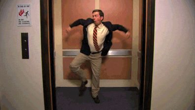

I have been learning web development over the past 4 months. It has been very challenging at times and a lot of fun. The past 10 years of my career have been spent working in some kind of intensive care setting in the Hospital. So this has been a very big change and new skill set to learn. Through my experaince so far I think I will gravitate towards the front-end design. But who knows maybe I will end up enjoying the back-end more after Gschool is finished.
